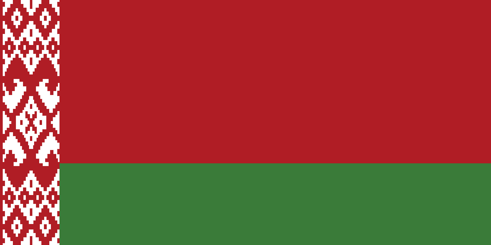

.
Флаг Республики Беларусь

Государственный флаг Республики Беларусь представляет собой прямоугольное
полотнище, состоящее из двух горизонтальных цветных полос: верхней
красного цвета и нижней зеленого цвета. Отношение ширины полос красного и
зеленого цвета – 2:1. Слева вертикально расположен белорусский орнамент
красного цвета на белом фоне. Цвета нашего флага имеют следующие значения:
Красный – сила, мужество, благородство, энергия; Зелёный – надежда,
здоровье, молодость, возрождение, трудолюбие, созидание, природная
гармония; Белый – чистота, непорочность, примирение, мудрость, знания.
Орнамент – символ древней культуры народа, его духовного богатства.
Содержание орнамента на Государственном флаге повествует о хлебе, урожае и
продолжении рода; прославляет трудолюбие и мастерство – первооснову
счастливой доли человека. Беларусь – первая в мире страна, которая
использовала национальный орнамент в качестве элемента государственного
флага.

дополнительная информация
Орнамент, размещенный на флаге, был вышит в 1917 г. крестьянкой из
деревни Костелище Сенненского района Витебской области Матреной
Маркевич. В Сенно ей установлен памятник.
Второе воскресенье мая – День Государственного герба и Государственного
флага Республики Беларусь.
В 2013 г. в Минске появилась площадь Государственного флага. В центре её
находится 70метровая стела, на которой установлен самый большой в
стране государственный флаг. Его площадь составляет 98 м2, а масса 25
кг.